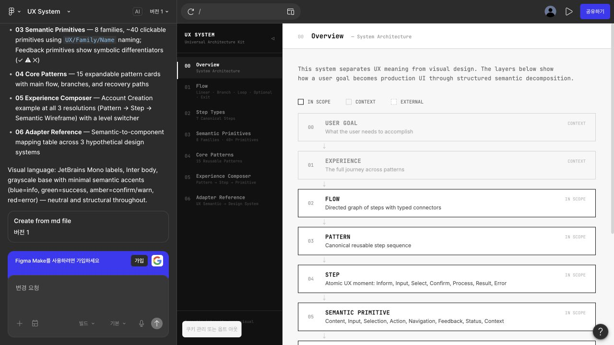
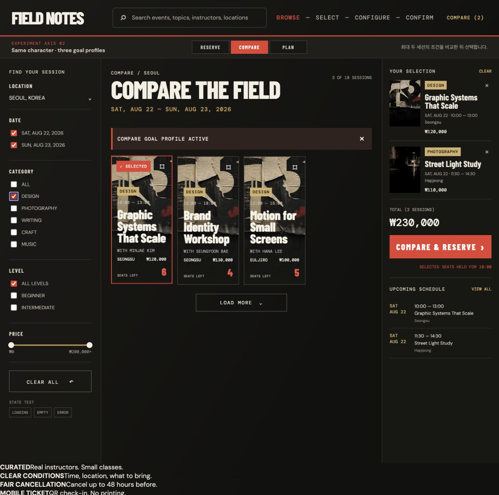
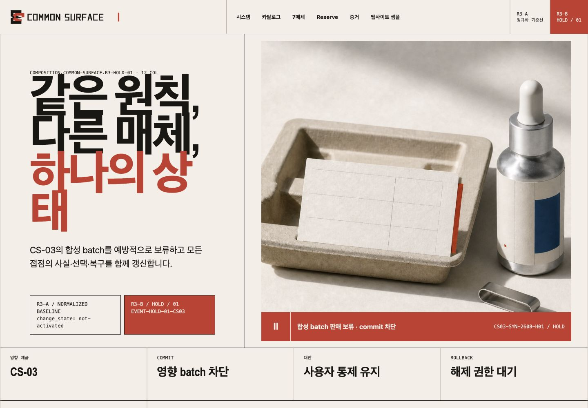
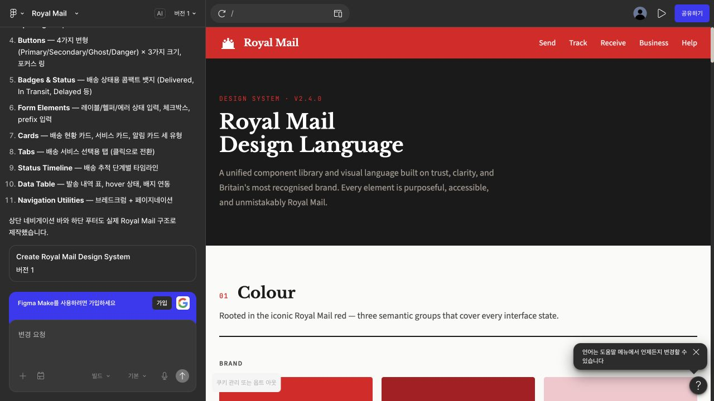
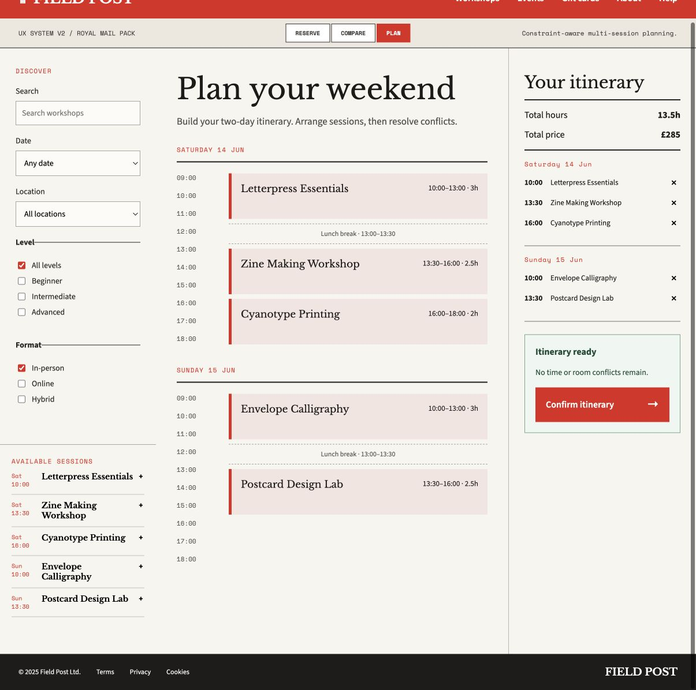

08/04START
UI와 UX가 분리된
범용 시스템을 만들자.
AI의 도움을 받아 UI와 UX가 분리된 범용 디자인 시스템을 만들겠다는 목표를 세웠다. 최소 온보딩으로 전체 기능과 목적을 이해시키고, 직관적인 UI와 확장 가능한 AI 디자인 시스템을 함께 설계하려 했다. 핵심은 화면을 많이 만드는 것이 아니라 다른 경험에도 적용 가능한 구조를 찾는 것이었다.

하나의 가설을 들고 떠난 C5의 모험기
서로 다른 역할을 나누고, 필요한 순간 다시 조합할 수 있을 때 범용성이 생긴다. C5는 이 가설을 세우고 8월의 실험을 시작했다.
AI의 도움을 받아 UI와 UX가 분리된 범용 디자인 시스템을 만들겠다는 목표를 세웠다. 최소 온보딩으로 전체 기능과 목적을 이해시키고, 직관적인 UI와 확장 가능한 AI 디자인 시스템을 함께 설계하려 했다. 핵심은 화면을 많이 만드는 것이 아니라 다른 경험에도 적용 가능한 구조를 찾는 것이었다.

UX는 경험의 흐름·상태·판단을, UI는 그 경험이 보이는 방식과 컴포넌트를 맡는다는 분리의 가능성을 정리했다. AI에게 레퍼런스를 주는 방법과 결과를 평가하는 A/B 기준도 함께 기록하기 시작했다.

AI가 디자인 시스템을 이해하게 하려면 이미지 한 장보다 구조·목적·사용 규칙을 함께 전달해야 했다. 기존 시스템을 읽고 분석해 문서화하면서, 새 시스템을 설명할 공통 언어와 비교 기준을 마련했다.

개선된 기준으로 새로운 디자인팩을 만들고, UX/UI 시스템과 시각 표현을 분리해 관리하는 구조를 정의했다. 그러나 시각 정보를 다루는 작업은 여전히 느렸고, 새 시스템을 만든다고 품질이 자동으로 개선되지는 않았다. 8월 12일의 기록은 짧게 남았다: 실패.

작업 속도를 높이기 위해 Figma MCP용 플러그인을 개발했다. 직접 가능한 방법을 물어보고, 같은 과제를 두 방식으로 실행해 A/B 테스트했지만 기대한 효율 개선은 나오지 않았다. 토큰 관리가 작업의 조건이 되었고, 느린 것은 손의 움직임보다 시각 정보를 해석하고 다음 판단을 정하는 과정이었다.

게임의 UX 흐름을 먼저 문서로 정리한 뒤, Figma Make로 분리된 구조를 실제 화면으로 번역했다. 문서와 레퍼런스가 데모 디자인 시스템으로 나타났고, 이제 질문은 “만들 수 있는가?”에서 “의도한 구조가 화면에 남아 있는가?”로 바뀌었다.
Figma Make로 디자인 시스템을 확장한 뒤, UX 통합 프리셋을 시도했다. 색과 스타일만 바꾸는 방식은 같은 화면에 다른 옷을 입히는 데 그쳤다. 선택·검증·커밋·결과·복구의 흐름까지 바뀌어야 진짜 다른 경험이라고 판단했다.

흩어진 화면과 리서치를 Markdown Design Pack과 UX Preset으로 다시 정리했다. 문서를 더 많이 만드는 대신, 무엇이 UX의 기준이고 무엇이 시각 표현의 선택인지 구분했다. Figma는 결과를 확인하는 공간, Markdown은 판단 기준을 기록하는 문서가 되었다.

Design Pack과 UX Preset을 데모 제품에 적용했다. Flowchart에서 Low-fi, High-fi로 이어지는 과정에서 선택·재생·오류·복구 상태가 같은 기준으로 유지되는지 확인했다. 보기 좋은 한 화면이 아니라, 상태가 이어지는 전체 흐름이 검증 대상이 되었다.

두 가지 대규모 테스트를 실행했다. 첫 번째는 7개 매체에 변경을 전파하며 Binding·권한·rollback·증거 관리의 결함을 드러냈고, 종합 판정은 63/100 REVISE였다. 두 번째는 Design Pack·로고·제품·토큰을 고정하고 고객 상황 하나만 바꾼 최소 검증이었다. 내부 평가는 6.2에서 8.1로 올라갔지만, 이것은 가능성의 증거이지 실제 사용자 가치의 증명은 아니었다.


하지만 가능성은 결과와 다르다. 구조를 분리하면 다양한 표현을 만들 수 있지만, 실제로 좋은 경험이 되는지는 별도의 검증이 필요하다.
8월 4일부터 26일까지 만들어진 시각 증거의 일부를 한곳에 모았다. 큰 이미지는 전환점을, 작은 이미지는 실험의 규모를 보여 준다.









얻은 것
UX와 시각 표현의 분리
Design Pack과 UX Preset의 구분
판단 기준을 문서로 재사용하는 방법
아직 모르는 것
실제 사용자도 같은 차이를 느끼는가
다른 사람이 이 시스템을 독립적으로 사용할 수 있는가